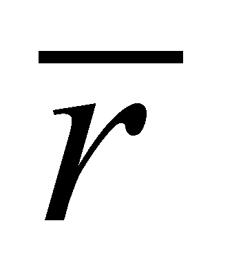
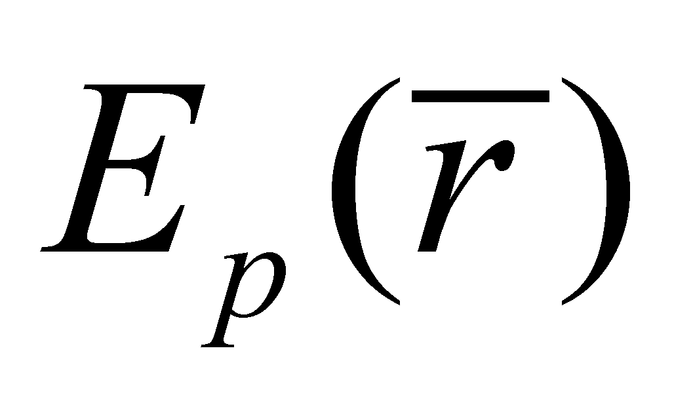
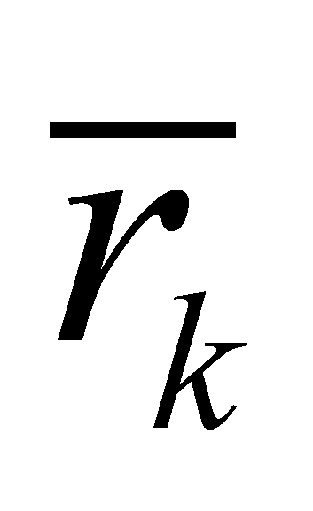
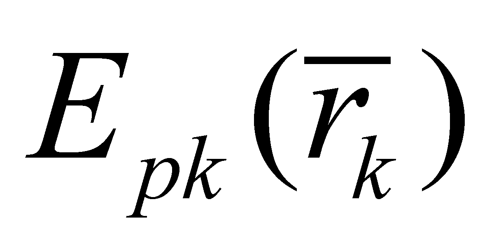
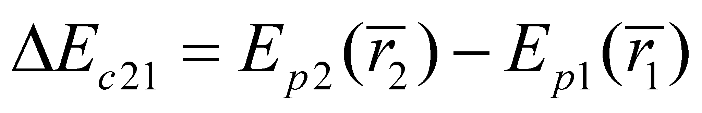
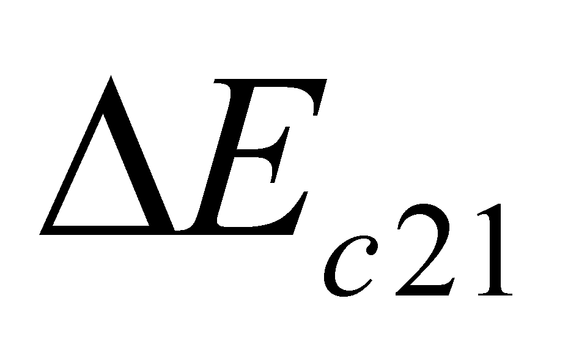

|
|
|
Besides many other opinions which are different from the ones sustained by the current physics, the objectual philosophy presents totally different point of views concerning two aspects of the potential energy notion:
What is the object which owns (which stores) the potential energy?
What is the agent object in case of the energetic interactions deployed through potential energy fields with uneven distributions?
There is a clear answer to the question 1, given by the objectual philosophy: by means of the definition 7.6.2.3, the potential energy is distributed (stored) into an EF with a null external coherent component, whose material support is a medium which is under an overall rest state against an external reference RSe. The volume density of the potential energy is the scalarized FDV of the stochastic EF. As for the baric potential energy, this scalarized density is the pressure, and the Euler distribution of the pressure gradient into the support medium represents a potential energy field (evidently, a vectorial field).
First of all, we shall take into account the case of an even distribution of the energy density in a specific volume, such as, for instance, the pressure, and in this case the pressure gradient is null. In this case, an evenly distributed force shall be exerted against a MS “immersed” into this kind of medium (the medium’s action against MS), that is a force to which MS shall reply in the same way, the reaction force of MS against the medium, which is also evenly distributed on the same RBS. Since the two forces (energy fluxes, according to the definition 7.6.6.4.1) are evenly distributed on the surface, their resultant shall be null, therefore, the body, together with its equilibrium surface shall be motionless both against the medium and also against the external reference system RSe. If the distribution of the stochastic EF is radially uneven and the internal reference of this distribution is RSs (considered as motionless against RSe), this SRs shall be the internal reference of an object called the uneven radial field source. Into a field like this, on the RBS of a MS “immersed” inside it, the resultant of the surface distribution of the stochastic EF quanta variation shall not be null any longer, but it will have the direction in opposition with the field gradient, and the resultant modulus shall be in direct proportion with the proximity of the field source. Since there is a non-zero resultant force (a coherent component of EF distributed on RBS), if the “immersed” MS is free, it will be accelerated (it will receive energy from the stochastic energetic field) on the direction of the resultant force, that is the opposite gradient’s direction.
According to the current physics textbooks, in a situation like this, it is said that a MS which may be found in a field at a specific position  against the field source, “has the potential energy ”, which can be transformed into kinetic energy. The objectual philosophy states that it is not the MS from the energy field which owns the potential energy, but the environment, the material support of the stochastic energy field.
The answer given by the objectual philosophy to the question 2 is once again both clear and unexpected namely, the agent object, the agent EF source (according to the definition 7.3.3) which moves the “immersed” body is the medium on whose elements the potential energy is distributed, and not the MS which represents the source (cause) of the field unevenness. Between the source MS and the uneven field from the support medium of the potential energy, there is a relation of causality (a causal chain, see the annex X.19), because if no source MS would exist, the uneven field would not exist either. However, between the source MS and “the immersed” MS, there is no direct energy flux deployed in its field, therefore, there is no direct action either.
If there are two MS, which are both source of the same type of energy field, “immersed” in the same medium, then, in each point of the space occupied by the environment, there will be two gradient vectors which will have a vector composition, by resulting another field, “deformed” against the configuration of the initial fields. If we presume that the gradient direction of both sources is the same, for instance from the source to the outside, as a result of the composition of both fields, the gradient vectors will be subtracted in the space between sources, resulting a more reduced gradient, whereas in the rest of the space, the gradient vectors will be added. Consequently, through the integration on RBS of FE density of the two MS, two forces will be generated with the direction against the local gradient (resultant), the so-called attraction or repulsion forces, although not the field sources are the direct source of EF which determine the forces generation, but the environment is the one which will “push” the two MS. But the uneven distribution of the potential energy from the support medium would not be able to exist without the existence of the field sources.
Comment X.22.2.1: According to the issues mentioned in annex X.19, the force which occurs on the RBS of an “immersed” MS into a medium with a non-even distribution of the potential energy density is the result of a causal chain, the medium’s action against the body is the proximate cause of the force occurrence. However, the non-zero resultant of the medium’s action (resultant force) could not occur if there was no uneven distribution of the pressure gradient, distribution whose cause is the field source. In other words, the MS which represents the source of the uneven field is the primordial cause which generates that force.
From an energetic point of view, the spatial states S0 of the internal reference T of a MS “immersed” into an uneven energy field are states of null kinetic energy, but if MS is free and it can be found into a medium with Euler distribution of radial uneven EF, for each position  of MS114, a related potential energy  of the medium can be defined (see the relation 7.6.4.1.3) so that:
 (X.22.2.1)
where  is the variation of the kinetic energy of MS (kinetic energy received by MS from the medium) between the two spatial positions, an energy equal with the variation of the potential energy of the medium between those positions. EF which is generated by the external medium which acts on MS, correspond to the force exerted by that medium (medium’s action against MS), and EF of the moving MS corresponds to the force with which MS acts on the medium (reaction). If MS is free, the force exerted by the medium becomes an active force, and its mechanical work will be converted into the kinetic energy of MS.
In chapter 7, section 7.3.3, where the action was described, the agent object was the source of the agent flux. In this case, we may say that we are dealing with a direct action between two objects - agent object and driven object. In case of a MS “immersed” into a medium with uneven energy distribution, the agent object (the agent EF source) is the environment, and the driven object is any MS placed at the position , and which, as a result of the medium’s action, shall receive from it the energy shown in the relation X.22.2.1, which will set it into motion. But the unevenness of FDV distribution of stochastic EF which may be found into the driven MS’s medium is due to the presence of another MS which has generated this unevenness - source MS of the uneven distribution.
In this case, although there is no direct EF exchange between the source MS of the uneven field and the driven MS, we might say that an indirect action occurs between the source and the driven MS, because the source MS, by means of a causal chain, is the origin of the action carried out on the driven object, but having the common environment as its intermediate, in which both MS are being “immersed”.
Comment
X.22.2.2: The notions of direct and
indirect
action which were previously mentioned regarding the energetic
actions may be easier understood by the reader by invoking once again
the case of the informational actions deployed in the humans
community. If the population of a country is assimilated with the
stochastic medium in which the information fluxes run randomly
between the individuals which interact through direct communication,
written messages or other types of information fluxes (IF), we may
say that this medium has a finite information amount (a stockpile)
stored inside it. Each element of the society owns a part of this
stock. A transfer (an IF) is possible to be performed from this
individual stockpile, by means of the common language (transfer which
was mentioned in chapter 9), to another member of the society. In
this case, the IF source is the agent object, IF is the agent flux,
and the flux receiver is the object which is informationally driven.
This is a classic example of informational action, process in which
IF runs directly from the source to the addressee, that is a reason
why we are dealing with a direct
informational action. If the central system (political power) wants
to communicate a specific information to the population (such as a
governmental decision), this information shall be broadcast through
mass-media, that is a process similar with the propagation or
diffusion. In this case, the IF which reaches to a certain member of
the society (agent flux) is not coming directly from the main source,
but through a series of agents. It is clear that we are dealing with
a process of indirect informational
action. It is worth noticing that in a DS, either it is a social
medium, NM or PFM, the actions which are based on propagation or
diffusion fluxes as their agent object, are indirect actions, with
the propagation/diffusion medium as an intermediate agent.
114 is the position vector of the internal reference T of MS against the internal reference T of the uneven radial field source.
Copyright © 2006-2011 Aurel Rusu. All rights reserved.